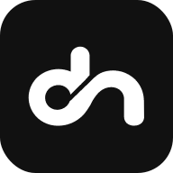

기본형
로그인 · 메뉴
오늘의 업무를 기록하고, 내일을 준비하세요.
어두운 배경
앱 · 바로가기

작은 크기
사용 규칙
검정 #111111 · 흰색 #FFFFFF
가로세로 비율 유지 · 사선 틈 유지
주변 여백 확보 · 확대와 축소만 적용
승인한 A09 로고 · 로그인 · 메뉴 · 반전형 · 앱 아이콘
디자인 하네스 · 홈페이지오늘의 업무를 기록하고, 내일을 준비하세요.

검정 #111111 · 흰색 #FFFFFF
가로세로 비율 유지 · 사선 틈 유지
주변 여백 확보 · 확대와 축소만 적용